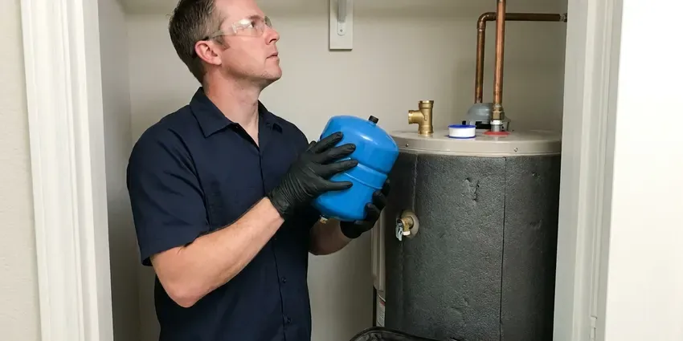

Sewage Ejector Pump Installation in Burlington, VT
Alarm going off on the pit? CKV Plumbing installs and replaces sewage ejector pumps in Burlington, VT, often the same day for replacements.
- Discharge Valves Installed
- High Water Alarms
- Local Crews
- Licensed Vermont Plumbers
Ejector Pump Installation by CKV Plumbing in Burlington, VT
Many pump swaps get done the day you call. No pressure to book.
Sewage Ejector Pump Installation in Burlington, VT
CKV Plumbing works on Vermont homes with basements, hillside lots and walkout lower levels where gravity drainage is not possible. We size each ejector by fixture count, vertical lift and pipe length, so it moves waste without short cycling or straining. Every system gets an alarm. We also lay out the valves so a future pump swap takes an hour, not a day.
Some of what we do:
- Slab cutting and basin setting
- Proper electrical and float settings for new pumps
- Grinder pump systems for pressure sewer and long runs

Additional Plumbing Installation Services in Burlington, VT
We install water heaters, pumps, lines, and fixtures across Burlington, VT with careful, permitted work that passes inspection the first time.


Customers
Why Choose CKV Plumbing for Sewage Ejector Pump Installation in Burlington, VT?
Installing pumps in Vermont homes means dealing with whatever is under the slab, from rock to wet clay. Rocky glacial soil and ledge are common across Vermont, which can make digging for water lines, sewer repairs or septic work slow and costly. The excavation plan accounts for it. We bed and backfill each basin so it will not float or move, then patch the slab with concrete over a vapor barrier instead of leaving a loose lid.
- System Sizing, Pumps are sized by lift and run, not by guesswork.
- Alarm Protection, A high water alarm warns you before a backup.
- Sealed System, Gaskets at every penetration keep sewer gas in.
Citywide Coverage
Our crews cover Burlington from one side to the other and the towns around it. Older homes often have a high sewer exit in the basement, and newer homes on slopes tend to have walkout levels below the street main. We know what to look for.
Experienced Team
The team understands basin sizing, venting rules and discharge routing to the building drain. They also coordinate the electrical side with your electrician, including a dedicated circuit for the pump and power for the alarm, since a pump sharing a circuit with a freezer can trip a breaker and leave the basin filling. Each pump gets its own breaker.
Safety-First Approach
Every ejector install gets a full water test before we leave. We fill the basin through the fixtures, watch the pump start and stop at the right levels, check the discharge and check valve for leaks, and trip the alarm so you know what it sounds like. You will know the sound.
Trusted Certified Burlington Plumbing Services Professionals
At CKV Plumbing, we take pride in licensed, certified plumbing services throughout Burlington, VT. Those papers on the wall mean something. Every repair, install and maintenance visit follows strict safety and quality rules, and the plumbers doing the work carry recognized industry credentials.
Call Us Now PHCC Plumbing Contractor Recognition
PHCC Plumbing Contractor Recognition Better Business Bureau (BBB) Accreditation
Better Business Bureau (BBB) Accreditation Angi Certified Pro
Angi Certified Pro ISO 9001 Quality Management Certification
ISO 9001 Quality Management CertificationEjector Pump Jobs We Handle in Burlington, VT
Ejector Pump Replacement in Burlington
Ejector pumps tend to run 7 to 10 years, depending on how often they cycle and what gets flushed. Signs of trouble include a pump that runs constantly, a grinding or humming noise, an alarm that keeps tripping and sewage odor near the pit, and any of those means it is time to call before the basement floor tells you. Old switches fail first.

Residential Sewage Ejector Pump Installation in Burlington
Residential ejector systems in Burlington serve basement bathrooms, lower-level suites and any fixture that sits too low to drain by gravity to the sewer. The setup is a sealed basin, a pump, a float switch, a check valve and a vent. Simple parts, exact install. Install mistakes cause more trouble than hardware, so the vent and lid seal get extra attention.
Emergency Ejector Pump Replacement in Burlington, VT
A dead ejector pump means the basement fixtures stop working until it is fixed. Stop using those fixtures, including the washer if it drains to the pit, then call (802) 209-5139 and we will try to get a plumber and a replacement pump to you that day. Replacements are often quick.
Sewage Ejector Pump Basin & Pit Installation in Burlington
Digging the pit starts with a saw cut through the floor, deep enough to set the basin flush with the finished floor. Rocky glacial soil and ledge are common across Vermont, which can make digging for water lines, sewer repairs or septic work slow and costly. We bed the basin on gravel and backfill around it so it cannot float when groundwater rises, then pour new concrete to seal the floor and lock the basin in place. Floating basins crack floors.
Liberty Pumps Sewage Ejector Pump Installation in Burlington, VT
Liberty builds single and dual pump packages that arrive with the basin, pump, lid and fittings matched. Matched packages speed up the install, and Liberty's float design is less likely to snag on the basin wall, a common reason older pumps fail to start. Switch failures cause many calls.
Laundry and Wet Bar Ejector Pumps in Burlington, VT
Below-grade laundry rooms and wet bars send gray water down that still needs to be lifted to the sewer. A smaller laundry tray pump or a compact ejector can handle it, sized for the 15 or more gallons a washer dumps at once, with a lint filter so fibers do not wrap the impeller. Lint kills small pumps.
Basement Bathroom Ejector Systems in Burlington
Basement bathrooms sit below the building sewer, so every fixture drains to a sealed pit instead of flowing by gravity. We cut the slab, trench the drain lines to the basin, set it, run a two-inch vent up through the house to the roof and pipe the discharge to the building drain with a check valve and shutoff. Then we patch the concrete.

Grinder Pump Installation in Burlington
Grinder pumps chop waste into slurry before pumping it, which lets them push through small pipe over long distances. They are the right choice when the sewer is far away, uphill or under pressure, like on a pressure sewer system where the pump feeds a shared force main in the street. They cost more. A standard ejector often covers a basement bath.
Nearby Sewage Ejector Pump Installation in Burlington, VT
Searching ejector pump repair near me in Burlington usually means the alarm is going off or the basement drains stopped. CKV Plumbing is local, so a plumber with a pump can often reach you that day, and the same person who diagnoses it installs it. No hand-offs. One plumber, start to finish.
Planning a basement bathroom? Book a free estimate with our local crew. We locate the main drain, plan the vent route, check the spot for the basin, and hand you a written price before leaving. No guesswork on cost. Most visits take under an hour.
CKV Plumbing at a Glance
- Fully licensed plumbing team covering Burlington, VT
- 24/7 emergency service with same-day scheduling
- Clear written estimates, no hidden fees
- 4.8-star rated by 553+ Vermont customers
Burlington Map
Burlington Information
- Population
- 44,528
- Area codes
- 802/860/603
- Service area
- Burlington and towns within a 40 mile drive
- Nearby
- Winooski, South Burlington, Essex Junction, Shelburne
Most ejector pumps last 7 to 10 years, and a high water alarm is the cheapest way to hear about a failure before the floor does.
Expert Services
Call CKV Plumbing for reliable plumbing work done by licensed pros in Burlington, VT.
Our Specialized Plumbing Services in Burlington, VT
At CKV Plumbing, we handle the full list of plumbing services across Burlington, VT. We go from leak detection all the way to full system installations, for homes and commercial buildings, and we do it quickly at a fair price. Take a look at our core services below:


What to Expect From an Ejector Pump Install in Burlington, VT
A written quote comes first, then the work starts in Burlington, VT.
In-Home Estimate
Call (802) 209-5139 to set up an estimate. We size the pump and price the job in writing.
Install the System
We install the basin, pump, check valve, shutoff and vent. Floor patching comes after inspection.
Test and Inspect
We run the system through several cycles and test the alarm. Inspection follows.
Frequently Asked Questions About Sewage Ejector Pump Installation in Burlington
Ejector installs in Burlington usually run $2,500 to $5,000. A new basin, the amount of slab cutting, the vent run to the roof and the electrical work are what push a job toward one end or the other. You get a firm number on site.
A pump that runs nonstop, a sounding alarm, sewage odor, gurgling drains and slow drainage. Act fast to avoid a backup.
A new system tends to run one or two days. That covers cutting the floor, digging the pit, setting the basin and pump, connecting the drains and vent and running the discharge, with the concrete patch after the inspection. Pump swaps are faster.
Manufacturer warranties typically range from 1 to 5 years, by model. We also warranty our installation labor.
Wipes, paper towels, feminine products, grease and cat litter. They jam impellers and kill pumps early.
An ejector handles solid waste and wastewater from fixtures below the sewer line, like toilets and sinks. Sump pumps move groundwater only.
Not much, but it matters. Check the basin for debris, confirm the check valve closes, make sure the float moves freely and test the alarm, and keep wipes, grease and paper towels out of the drains. Do it yearly.
We advise against it. It combines plumbing, wiring, venting and usually concrete, and getting one wrong can mean sewer gas, a backup or a failed inspection. Permits usually require a pro.
Hear From Customers Who Hired Our Plumbing Experts

Lisa C.
Water was pouring out from under the washing machine on a holiday weekend. CKV Plumbing talked me through closing the valves over the phone and had a plumber at the house within ninety minutes. It was a burst fill hose.
Emergency Plumbing · St. Albans, VT
Jessica T.
We were adding a gas range in a kitchen remodel and needed a new line run from the meter. The plumber pulled the permit, ran the pipe through the crawl space, and had it inspected and approved within the week.
Gas Line Repair · Middlebury, VTRachel N.
Hard water was leaving white crust on every faucet and our dishwasher was struggling. The tech tested the water, recommended a softener sized for a family of five, and installed it with a bypass valve in one afternoon. The spots on our glasses are gone.
Water Softener · Shelburne, VT
Robert G.
The camera showed a full break in our clay sewer line near the street. CKV Plumbing replaced it with a trenchless pipe burst, so the only digging was two small pits in the yard. They let us watch the footage before and after.
Sewer Line Replacement · South Burlington, VT
Mark T.
The floor drain in our office break room backed up every few weeks. The plumber ran a cable, then put a camera down and found roots at a joint about thirty feet out. Seeing it on the screen made the decision easy.
Drain Cleaning · St. Albans, VTSofia M.
Two new toilets went in during one visit. The tech set them on new wax rings and swapped the old supply lines. He also noticed our bathroom faucet dripping and replaced the cartridge while he was there. No mess left behind.
Toilet Installation · Shelburne, VT